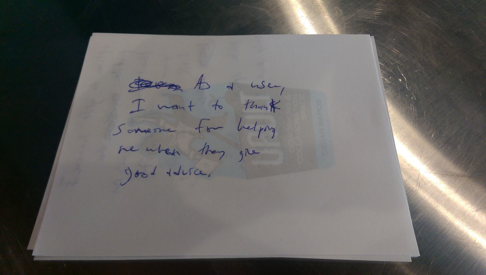
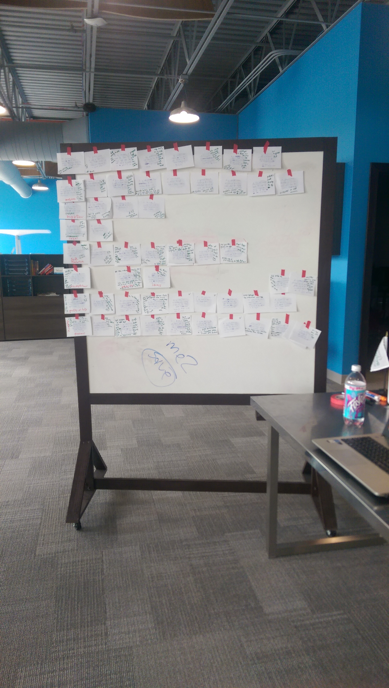

This week in the world of me2.
I spent this week working with user stories. Lots and lots of interaction with user stories. Grouping them, adding more detail, connecting the dots and even pivoting. It is absolutely crazy what user stories can do for your product. So crazy, this is what I want to talk about in this post.
What is a user story?
User stories are the needs of people in a product. An example of a user story for the me2 product would be, "As a user, I need to be able to feel safe after I share personal information with others.". The user story includes a user persona (in this case "user" represents a user of the app) and a need for that persona.
User stories are not just for the product end user or customer. It includes anyone who is effected by a product. Again in the case of me2, this includes developers, designers, social media team, customers, teenagers, adults, product owners, etc. Anyone who interacts with this product in any way needs to have user stories created with their needs on it. If they do not, then their needs are not included in the development of the product as user stories are used later on to plan out the development phase.
User stories are not features. User stories do not tell you how that person's needs are going to be fulfilled, it just simply states the need itself. The user story above, "As a user, I need to be able to feel safe after I share personal information with others." does not say how that user will feel safe, they just simply need to feel safe. The user story does not even require the user to be interacting with an app. This user story could be for a new block of cheese product. If a user of this block of cheese needs to feel safe after sharing personal information, then it is a valid user story. So, keeping user stories broad and general is pretty important.
Why are user stories so general and broad? It allows flexability. Because user stories are simply needs it gives the engineering team the ability to change the product up as much as needed in order to meet the needs of the users. This turns out to be very important as I will share in the coming sections...
How to write user stories.
When creating user stories, grab a couple pads of paper, a pen, and a couple hours. Go over all of your notes you wrote down during customer discovery interviews. Just write down as many needs of people as you possibly can. When I first started creating user stories, I honestly thought I was going to write down just a couple dozen but as time went on, I wrote down triple that. Give yourself the time and energy to brainstorm and write.

Here is a user story. One story per piece of paper.
After creating a big stack of user stories, now what do I do?
After you are done, grab some tape and a different colored pen or marker then you used for writing the user stories. I used some painters tape as it is safe to tape onto walls and a green colored marker.
On a wall or white board tape all of your user stories up. Then start to group them together by similar needs. For the me2 stories, I had user story groups such as "safety", "personal experience", "analytics", "quality of help" to name a few. Also, any user stories that seem like duplicates, just tape them on top of each other so they act as one user story.
In the end after you tape them all up on your wall or board, it should look something like this:

me2 user stories taped up on white board and arranged in groups (the rows of paper each represent one group).
Awesome. Now comes the fun part. Everything before this was prep work. Now comes the part where the user stories does thier magic. Keep reading...
The magic behind user stories. (aka, the reason I am in love with them)
Now grab your green marker or whatever color pen/marker you decided on. Get ready to start doing some heavy brainstorming. Clear your mind, make sure you are not stressed about anything. This process takes some heavy creative work to it so make sure your mind is not wondering on something else. Here we go.
Read each card on the board and start thinking of ways your product can meet that need. For the first example user story I stated above, "As a user, I need to be able to feel safe after I share personal information with others." maybe the me2 app keeps users anonymous? Maybe users are not anonymous but they have the ability to share personal information with only people they send messages to. Or maybe your personal information is stored privately with people you first meet on the app and then after you give them permission to see it, you can grant them access. With your green marker or whatever, write all of these ideas down on that user story piece of paper. They are all different ways you can meet that need.
Go through each and every user story. This is the difficult part and where user stories are amazing. The goal is for you to be able to go through each and every user story and find a solution for every single need. If you can build a product that satisfies everyone's needs then you have a solid product you're ready to start building with. This is also the difficult part of it. Good luck satisfying every need. It is very tough to satisfy the needs of everyone. However, you conducted customer discovery, you know the people written down on each user story. You might think of a solution for a user story but then think, "There is no way the user will like this solution. I remember interviewing them and I have a feeling this is not satisfactory for them.". You know your users better then anyone else. This is your time to build the best product these people have ever seen and they will want to shove money down your throat.
I pivoted the product a couple times during this process.
Like I said above, satisfying everyone's needs is pretty tough. There are a lot of needs and making each of them happy is tough to do. I went through each user story dozens of times until I got through them all.
As you are going through these stories you might hit a couple brick walls. A couple times I got through 2 dozen of the user stories writing down features and feeling pretty good about what I had going. I felt like I was indeed building a product that was going to work. Then I came upon 2 or 3 cards that ruined it. The current solution that I had going was not going to work anymore.
For example, as I was going through the user stories I came up with this concept of "leaders" on the app. I felt pretty good with this idea of leaders but then as I got to these 2 or 3 cards I realized it was not going to work. It would go against these user needs that were pretty important.
When I hit brick walls like this, I paced myself up and down the room thinking. How can I shift this "leader" idea to satisfy these 2 or 3 user story needs? If there is no way, then what new idea satisfies their needs plus the needs of the dozens of cards I went through previously? This all takes time but it's time well spent.
Take your time. When you're done you feel good. Real good.
It will take you a few hours to get through all of these cards. Maybe longer maybe shorter it depends on how much discovery you have done and how complex your product is. After you get to the end though, you feel good. Real good.
Think about it. You just got done creating a product that is going to satisfy the needs of all of your customers. You thought of a way to make their lives easier. For me, it was such a relief because the app solution that I created when I first started working on the user stories was not at all the solution that I came up with when I got done going through all of the user stories but the solution I have now is much better. Going through these user stories made me find the issues the original solution had and I ended up finding ways to fix it.
When you are complete, keep these user stories. You are going to be using them again later when you are planning out your development process. I will probably blog about them again soon as I get them out and use them again.
Well, it is time to start working on app prototypes now. I have a pretty good idea on the solution I am going to build now so lets get to work. Can't wait until I get to demo it to all of you readers out there!
I love user stories...
Everyone struggles at some point in life. No matter the situation, we are here to say me2. @me2nation
Twitter
Instagram
Facebook
Website
Blog